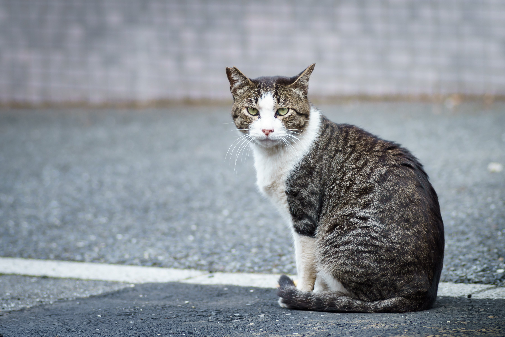
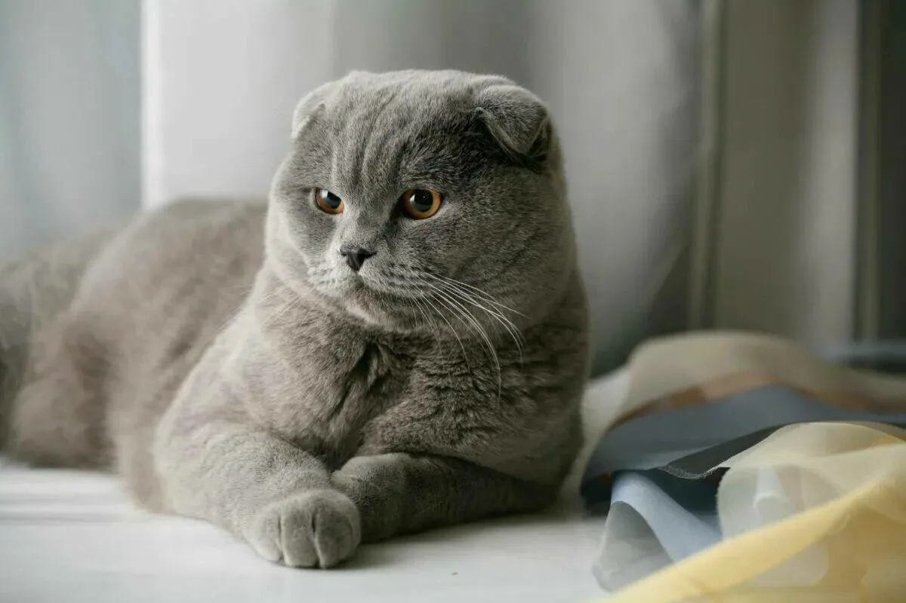
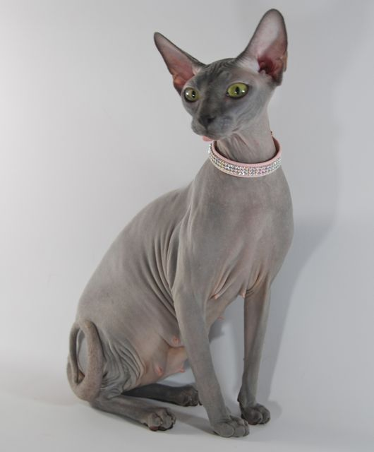

| Фото | Имя | Вид | Возраст | Описание |
|---|---|---|---|---|
|  | Барсик | Дворовый кот | 3 года | Барсик - это очаровательный 3-летний кот, который ищет любящую семью. Он ласковый и игривый, любит проводить время в компании людей. |
|  | Арсений | Шотландский веслоухий | 6 лет | Арсений - это 6-летний кот с независимым характером, который ищет спокойный и тихий дом, где его будут уважать и ценить. |
|  | Мурка | Египетская кошка | 12 лет | Мурка - это воплощение грации и элегантности. В свои 12 лет Мурка сохранила игривый характер и любопытство молодости. |